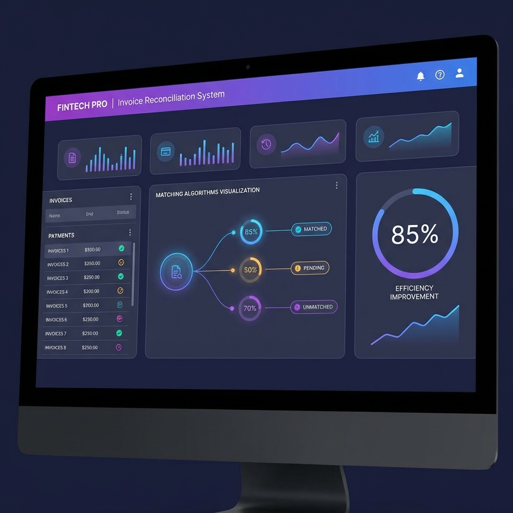
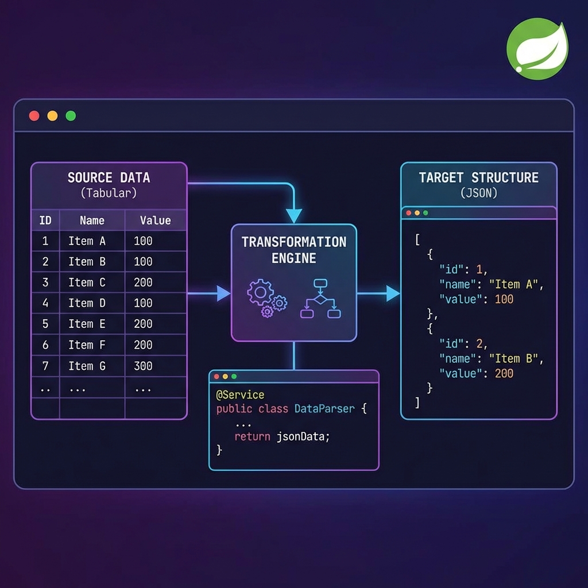
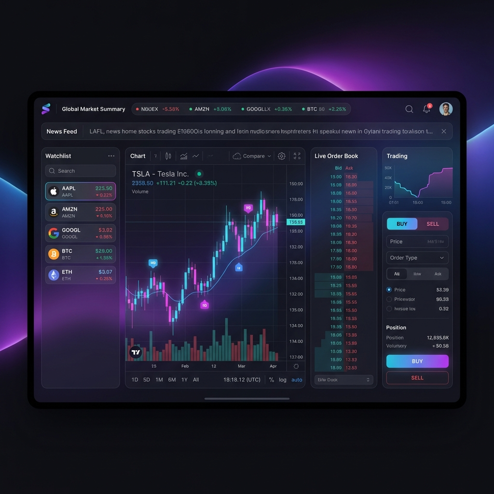
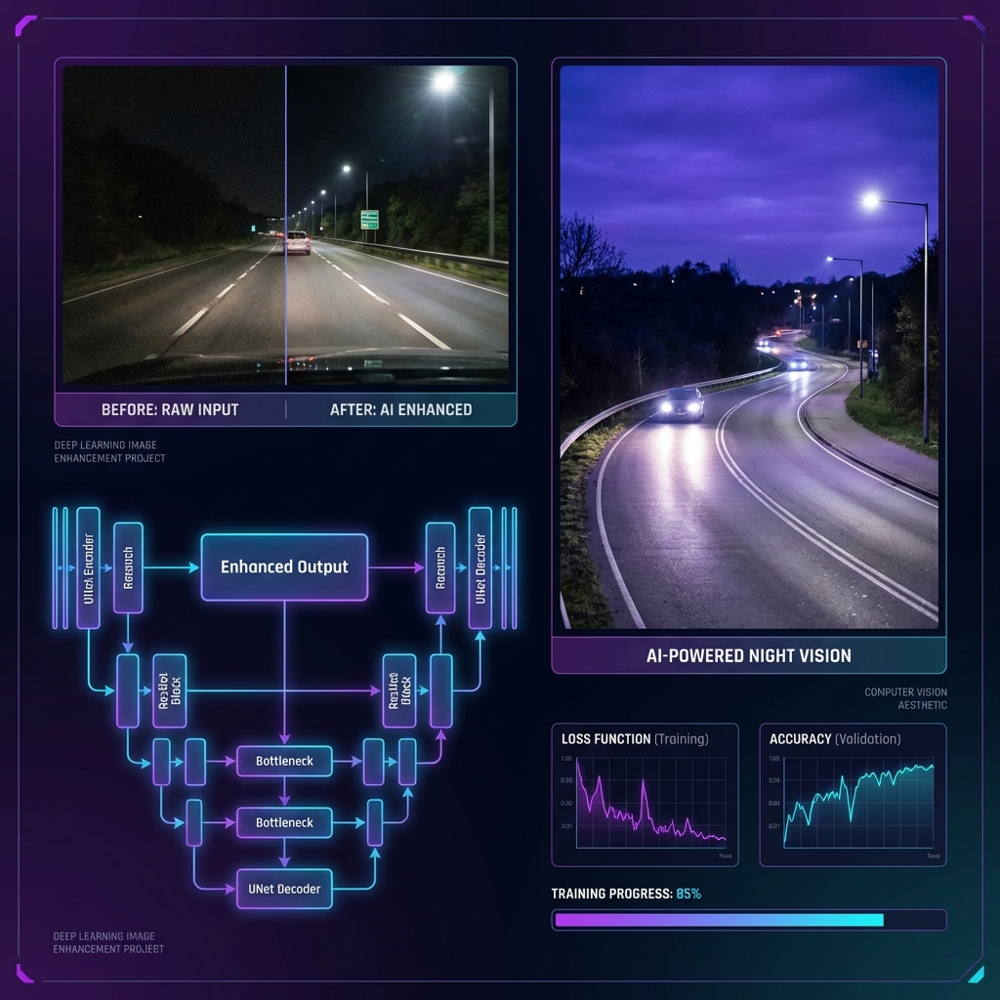
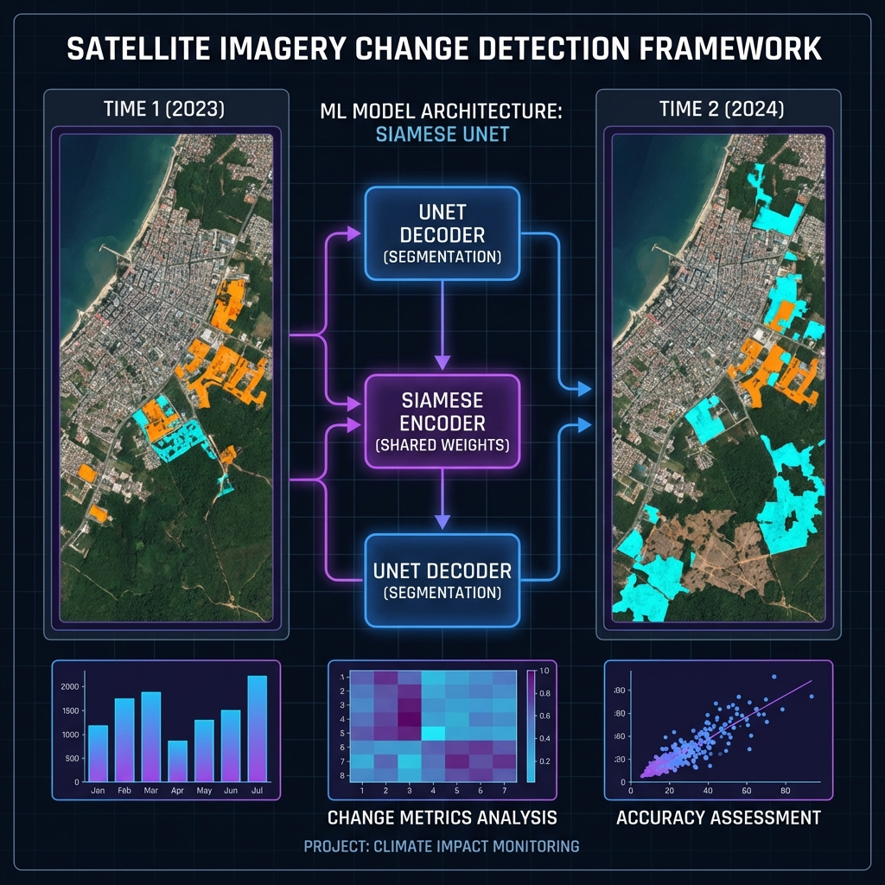

Hi, I'm
Backend Software Developer with 3+ years of experience building enterprise-scale applications serving millions of transactions. Passionate about creating efficient, scalable solutions that drive business impact.
I'm a Backend Software Developer at Citi with a passion for building robust, scalable applications. Specialized in Java/Spring Boot microservices, RESTful APIs, and data processing pipelines.
I've led cross-functional teams and delivered solutions that improved operational efficiency by up to 85%. My expertise spans financial systems, automated reconciliation, performance optimization, and cloud deployment on AWS ECS and OpenShift.
Beyond coding, I thrive on solving complex problems, mentoring team members, and staying current with emerging technologies in the backend development ecosystem.
Citi - Pune, India
July 2022 – Present

Spring Boot-based automation tool that parses invoices across multiple formats and matches data with OpenLink system records, achieving 85% reduction in manual effort.

Reusable Spring Boot parser for tabular data structures with JSON output. Adopted across multiple team components, reducing duplicate development efforts.

Full-stack application developed with a team of 4, featuring end-to-end trading functionality. Deployed using Jenkins and Docker during training period.

Deep learning algorithms for autonomous driving at night using BDD100K dataset. Implemented unsupervised and supervised methods including MBLLEN, ResNet, and UNet models.

ML research project implementing supervised and unsupervised methods to detect changes in bi-temporal satellite images using PCA, K-means, UNet, and Siamese networks.
National Institute of Technology, Karnataka (NITK) Surathkal
2018 – 2022
Minor in Information Technology - CGPA: 8.4
Relevant Coursework: Data Structures and Algorithms, Parallel Computing, Web Development, Digital Signal Processing
I'm always open to discussing new opportunities, innovative projects, or potential collaborations. Feel free to reach out!